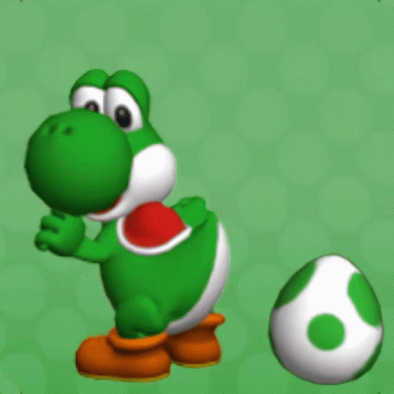
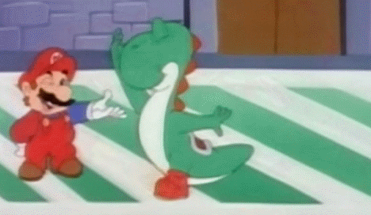
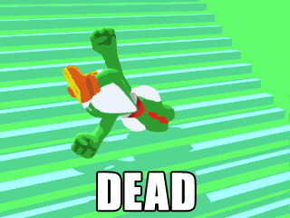
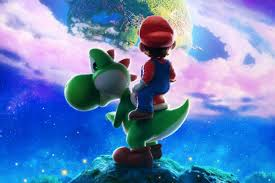
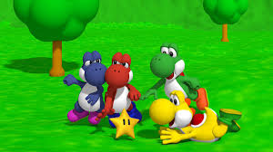
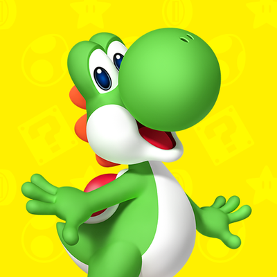
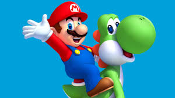

Historia y origen

El mundo magico del videojuego de Yoshi
Yoshi, el dinosaurio de plataformas, fue creado por Shigeru Miyamoto y Shigefumi Hino en 1990.
Su debut fue en el juego Super Mario World para la consola SNES, donde se introdujeron mecánicas
nuevas que permitieron a Yoshi correr más rápido y saltar más alto.
Yoshi también introdujo nuevos mecanismos de shell,
donde los diferentes colores de shell interactuaban con Yoshi al ser tragados: una shell amarilla causaba un pequeño terremoto al saltar,
una shell roja le permitía disparar fuegos de su boca, y una shell azul le daba la capacidad de volar brevemente.
Estos nuevos mecanismos hicieron de Yoshi un personaje adictivo y memorable en el género de plataformas.
Información
- Saltar alto
- Flotar en el aire
- Usa su larga lengua para atrapar a los enemigos y luego comérselos
- Pone huevos para usar como arma
- Genera un huevo a su alrededor para esconderse en su interior y protegerse
Habilidades/caracteristicas especiales
- Los potenciadores de Yoshi en Super Mario Galaxy 2: Los potenciadores de Yoshi incluían una bombilla y un pimiento de velocidad, ambos únicos e inolvidables.
- La introducción de Yoshi en Super Mario World: El debut de Yoshi en el juego original de Super Mario en 1990 fue un cambio radical en los juegos de plataformas, brindando a Mario mayor movilidad.
Top 3 momentos más icónicos
- Los saltos de sacrificio de Yoshi: En Super Mario Galaxy 2,
los saltos de sacrificio de Yoshi se convirtieron en un meme en la cultura gamer,
donde él se lanza al aire para salvar el día.
Ficha técnica
| Edad | 24 y 25 años |
|---|---|
| Peso | 31 KG |
| Estatura | 175cm |
| Primera aparición | 1990 |
| Debilidades | El peso bajo de Yoshi lo hace fácil de derribar |
| Alias | Yoshiyaur Munchakoopas |
Registro Exploradores
Únete a nuestra comunidad
Galería







